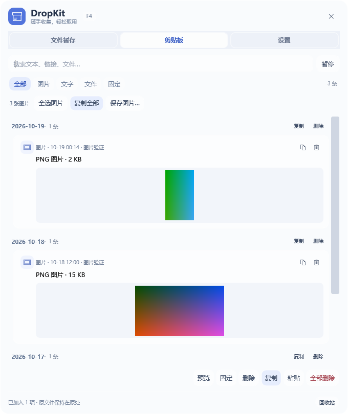

PROJECT / 网站与软件 · 03
DropKit Windows
把剪贴板内容和文件临时收在一个浮窗里，支持搜索、固定与拖拽取用。
基于开源 DropKit 的 Windows 社区移植。
如何使用
Windows 10 或 11，内置 .NET Framework 4.8。
Windows 程序界面
隔离测试数据下的实际程序界面，不含个人剪贴板。

把剪贴板内容和文件临时收在一个浮窗里，支持搜索、固定与拖拽取用。
基于开源 DropKit 的 Windows 社区移植。
Windows 10 或 11，内置 .NET Framework 4.8。
隔离测试数据下的实际程序界面，不含个人剪贴板。
